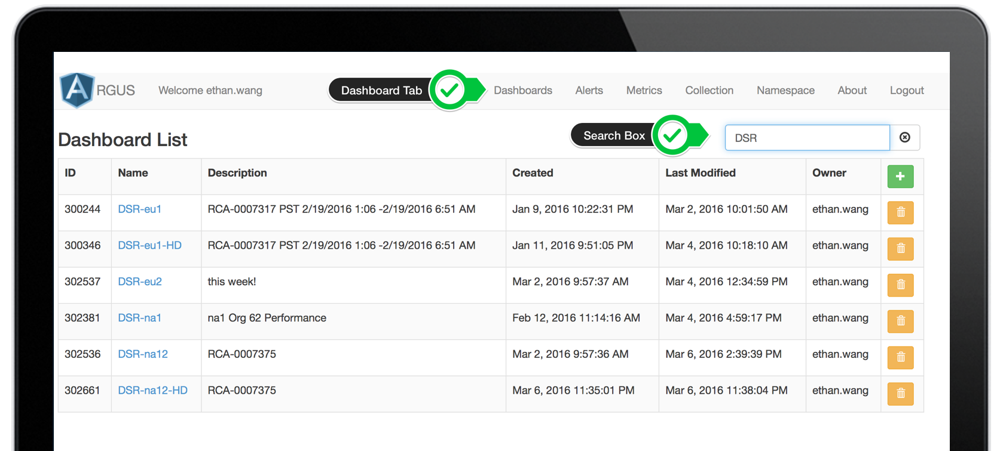
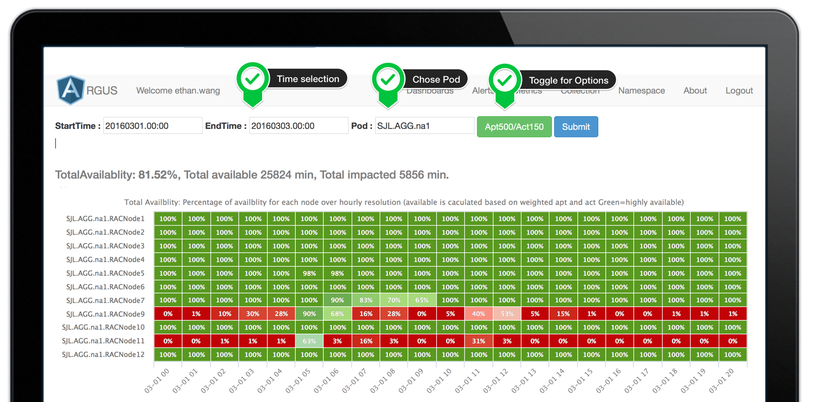

No Bias
A highly available, programmatic, metrics evidence-based web dashboard, built to deliver up-to-minute-resolution database service’s availability information to users.
Supportive
We are drafting this SLA for DB Workload Dashboards Services. Regardless, Heimdall(both Web portal and Restful service) is near 24/7 running compare to old-fashion manually updated powerpoint.

NRP
NRP means Near real time. Kafka is able to NRT and Storm on HBase is scaleble. At this moment we are consuming data from Graphite with weekly ETL scheduled. The team is working on to migrate it to ArgusCore.
Guide for First-time-user
First time using Heimdall or Argus? No problem. This session will help you find the right resource you want.
Step 1 Log In
First you will need to login, clicked the button above 'Try it now', it will navigate to argus login page. Alternatively, you may also typing url into browser yourself and hit enter. The username and password will be your salesforce sigle signon credentials(SSO). Same credential you login to email.
Example: paste them into Browser and hit enter
Chrome or Firefox
1https://www.sfdc.co/Heimdall_ava
Can't login? Please check:
1, Make sure you have your VPN connected
2, Authenticate through SFM. To do so, navigate to aloha (url below) and click icon "SFM"
3, Make sure you login dont contain email address. For example: rsarkapally rather than rsarkapally@salesforce.com
Chrome or Firefox
1https://aloha.my.salesforce.com
1, Try another Browser
2, Go to your browser's settings, clear the cache.
3, Try if you may able to log in from https://arguspm.ops.sfdc.net/argus/#/dashboards If you also can not login, that means you dont have access. In that case please let us know.
Step 2 Navigate
Now after you log in, you should be able to see a panel like this screen shot below.
Go to Dashboard Tab, and in the Dashboard Search box, you may type in DSR-na12, That is just an example we prepared for you.
To futher read how to use other component of this pannel, please check Argus's Chatter group

Step 3 Use Dashboard
Please note that this might take a while to load a dashboard. Depends on the data volume selected and your intenet condition.
To learn how to customize it, you may just start play around those buttons. Those options are prettly self-explained. however note that
Start time and end time: you must follow format as 20120102.01:03 note the usage of dot and colon
At Pod you must give the correct full name. format as Datacenter.SuperPod.Pod
Customization Options
1 Date: YYYYMMDD.HH.MM
2 Pod: Datacenter.SuperPod.Pod
In some case you may not see any data, this is because at our backend the data has not been loaded yet (refer to our presentation Architecture page). In that case, please let us know and we will load that data for you.
To futher read how to use other component of this pannel, please check Argus's Chatter group

Guide for Developers
(In development) This session will help you to deploy a full-suite Heimdall for your team using your exising argus pipeline. We dont have capacity to go further on this path yet, however, we denefitly want to. For now, all components is checked in at github at salesforce. Feel free to take a look.
Continue reading1, Presentation at DBCloud Health Check. https://docs.google.com/a/salesforce.com/presentation/d/1cXQNbL3z67WJFkEENuDoiRq18M_Vwvgb_XZrXw7euqw/edit?usp=sharing
2, Video recording. https://salesforce.mc.kontiki.com/global2/content?moid=95878305-224d-48b2-b64b-a54f10238a98
3, Learn about Argus: https://docs.google.com/a/salesforce.com/presentation/d/1yORwIIFpkuC5OlHqQaq7ZBGaxkKOHj2mmDkGpGEJBSg/edit?usp=sharing
Argus-powered Free to distribute.
Heimdall Total Availblity Dashbaord is architectured as a part of Argus. This means all its components are opensourced and free to re-distribute based on your teams need. Argus components includes ArgusCore, ArgusWebService and ArgusWeb. In addition to that, at our github you will find GrahiteETL, GrahiteWebService etc to fit different needs. If you need help to set a pipeline up for your team, please let us know.